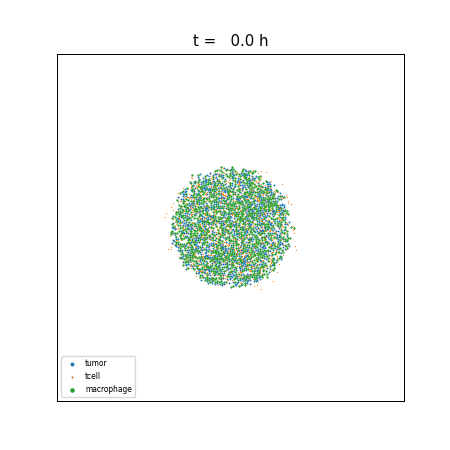

Agent-based simulation · curated L–R network
A tumour, T-cell and macrophage population seeded at 1,000 each, stepped for 72 simulated hours on the curated signalling network. Cells divide, die, push on each other and read their neighbours’ ligands; every gene in all 167 is tracked per cell, in real time. This is the whole run — the film, the endpoints, and all 24 figures.

Saved as two standalone AnnData files. Each carries the full state: observed counts in X, the S_true / U_true / spliced / unspliced layers, coordinates in obsm['spatial'], and 28 columns of per-cell metadata.
adata_t0.h5ad3,000 × 167 · t = 0 h · 1,000 of each type, none dyingadata_tfinal.h5ad7,970 × 167 · t = 72 h · includes lineage via cell_id / parent_id / birth_hsnapshots.h5ad132,548 cell-snapshots × 167 — all 25 time pointstf_dynamics.tsv movement.gif events.tsv tracks.npz grn_activity.npz lr_flow.npzall-TF trajectory table, animation, event log, per-cell tracks, GRN and ligand fluxBoth came up reading plot 04d. One is a plotting artifact; the other is a real gap in the rules.
Mostly because 04d plots a whole-tissue total, not a per-cell rate. The code sums signalling over every sender and receiver, so the number scales with how many cells exist. The population went 3,000 → 7,970, which is log2 +1.41 of the +2.60 median rise straight away — on a colour scale capped at ±2, that alone saturates most rows red.
Dividing growth out leaves a smaller, and much more interesting, signal. Per receiving cell, T-cells actually receive less signalling than at t = 0 (−0.35), macrophages are flat (+0.11), and only tumour cells gain (+0.57). The tumour-to-tumour channel rises +0.77 per tumour cell.
That residual is real, and it is the self-sorting from 05a showing up in the gene layer: as tumour self-contact climbs 0.36 → 0.72, tumour cells end up surrounded by other high-expressing tumour cells, so each one receives more ligand even though contacts per cell stay flat at ~4.45. Nothing is inflating — per-type expression actually drifts slightly down (−0.13 tumour, −0.29 T-cell, −0.22 macrophage).
Because the death rules almost never fire, and nothing couples crowding to death.
Both apoptosis rules in rules.yaml use half_max: 3.0 with hill_power: 4. The signal is in baseline standard deviations, so a cell has to sit three SDs above its own type’s mean before the rule even reaches half strength — and the 4th-power Hill makes the approach to that point very flat. Only 1.36% of cells clear 3 SD on the apoptosis signal and 0.24% on necrosis.
| signal at 72 h | median | 95th | 99.9th | max | above 3 SD |
|---|---|---|---|---|---|
| apoptosis | −0.05 | +2.04 | +4.63 | +5.72 | 1.36% |
| necrosis | +0.35 | +1.91 | +3.17 | +3.39 | 0.24% |
| pressure | +1.44 | +3.46 | +6.08 | +7.15 | 9.02% |
The result: the median realised apoptosis rate is 1.18× the base rate. Deaths are essentially the constant background rate of one per 313 h per cell — 20.5% over 72 h — with the rules contributing almost nothing.
The structural gap is in the last row above. Pressure is the one signal that genuinely gets extreme (9% of cells past 3 SD), and it is wired only to division_rate, where it works hard — median division is 2.48e−4/min against a 7.2e−4 base, a 3× suppression. But there is no pressure → apoptosis rule at all, so a crowded core stops dividing and then simply sits there. In a real tumour that core would go necrotic. Adding {signal: pressure, behaviour: apoptosis_rate, direction: increases} is the one-line change that would close it.
Growth, sorting and movement — the behaviour that falls out of the rules rather than being set by them.
Cell positions at 0, 15, 30, 42, 57 and 72 h, coloured by type, with dying cells as crosses.
The disc roughly doubles in radius and stays a disc. T-cells and macrophages scatter past the rim while the tumour core packs tighter — nothing in the rules asks for that boundary.
Counts, division and death rates, rule-set speed, self-sorting, infiltration, spread and mean squared displacement.
The strongest result here: tumour self-contact climbs 0.36 → 0.72 while macrophage self-contact falls 0.39 → 0.23. The tumour sorts itself together and the macrophages disperse through it. Meanwhile tumour division decays 0.041 → 0.030 /h as crowding feeds back on growth.
Paths of single cells through the run, sampled every 6 min.
T-cell tracks are long and persistent, macrophages short and local, tumour cells barely move except by being pushed.
8,647 divisions and 4,422 death starts, placed in time and space.
Division concentrates at the growing rim; death is spread through the crowded interior.
Relative pressure per cell, the signal the crowding rules read.
A core-to-rim gradient builds as the disc fills — this is what suppresses division in the middle.
Contact enrichment between every pair of types, as a z-score against a shuffled tissue.
Quantifies the sorting in 05a: strong same-type enrichment for tumour, near-random for the others.
The gene layer underneath the behaviour — transcription factors, behaviour modules, GRN edge activity and ligand–receptor traffic, all on the curated network.
Left: the whole-tissue total, as 04d plots it. Middle: the identical pairs per cell. Right: signalling received per cell by receiver type, against the dashed growth curve.
The left and middle panels are the same simulation. Almost all of the red on the left is the tissue getting bigger. On the right, only tumour cells end up receiving more; T-cells receive less.
Every transcription factor in the curated network, mean log2 against each type’s own t = 0 baseline. Same row order and colour scale in all three panels, so a row reads across types — unlike 04a, which ranks a different 30 TFs per panel.
This is the direct answer to “is everything going up?” — it isn’t. The field is mostly pale blue: TFs drift gently down, hardest in T-cells (NFKB1, STAT3, JUN, ELF1, RBPJ, MYC, ETS1). The exceptions stand out: FOS climbs in tumour after ~48 h, BHLHE40 climbs in T-cells, HES1 and SP1 lift slightly in tumour. Note the scale — nothing exceeds ±0.35 log2.
The 60 most dynamic of 973 edges, as change in edge input from t = 0, on a shared scale.
Bidirectional and type-specific: SP8→CXCL12, NFKB1→RIPK1 and ELF1→CCR7 rise while RXRA→PAX5 and ZBTB33→SP8 fall. T-cells are the most dynamic type, macrophages nearly static — consistent with macrophages having no division and the slowest speed.
Every gene in the network — TFs, ligands, receptors and module targets — in the same layout.
Lets you check whether any one role class behaves differently. Ligands and receptors drift down slightly more than TFs do, which is why the per-cell signalling rise in 14d has to come from neighbourhood composition rather than expression.
The 20 busiest L–R pairs over 72 h, with sender → receiver totals at the start and end.
Tumour → tumour signalling goes 240k → 1.94M, an 8× rise against a 4.7× rise in tumour cells — signalling grows faster than the population because the core is packing denser. Cadherin and thrombospondin pairs dominate, which is exactly where the new repressive links sit.
Per-type TF trajectories across all 70 TFs in the curated network.
Includes the 16 pathway effectors added this build — NFKB1, STAT3, TCF7, LEF1, RBPJ and the rest — which the old 50-TF network had none of.
Apoptosis, proliferation, migration, chemotaxis and necrosis scores per type.
These are the quantities the rules convert into division, death and speed.
Change in each edge’s input (regulator activation × weight) over real time.
This is the quantity behind the dynamic-GRN comparison. Edges are fixed; their activity moves with each cell’s state and neighbourhood.
Genes most associated with each behaviour; red marks the genes the rules actually read.
A sanity check — red genes should rank high. Anything else ranking high got there through the network.
Selected genes mapped onto cell positions at the final snapshot.
Shows whether expression organises spatially rather than just by cell type.
Genes whose expression varies with position more than chance allows.
The spatial signal the simulation generates, available to test spatial methods against a known truth.
Embeddings, clustering and pseudotime — the standard single-cell views, computed on a dataset where the true time and lineage are known.
Cells embedded and coloured by type and by simulated time.
Diffusion pseudotime against the real clock.
The script notes the honest caveat: cell types are fixed here, so pseudotime can only track state drift, not differentiation.
Clusters found in expression without being told the types.
The 09a clusters mapped back onto position.
Tests whether a state found in expression alone corresponds to somewhere real.
Velocity recovered by scVelo from the spliced and unspliced counts, checked against the true velocity the simulator recorded — the comparison real data can’t offer.
Inferred velocity field at 72 h.
The same, pooled across all 25 snapshots.
scVelo’s estimate against the simulator’s recorded truth.
This is the point of the exercise: a ground-truth benchmark for velocity.
The same accuracy check across all snapshots.
Unspliced against spliced per gene, the basis of the velocity model.
Pooled across the run, where the loops are easier to see.
Pseudotime derived from the velocity field, against the real clock.
A second run adding the one rule the first was missing, so crowding can kill and not just suppress division. Everything else — engine, network, seed, tissue — is identical. configs/rules_pressure_death.yaml, run main_72h_pressure_death.
In the control, median pressure climbs the whole run with nothing to stop it. With the rule it dips and then holds steady near +0.9 SD — crowding kills, which relieves crowding. No overshoot or oscillation, despite dying cells lingering 8.6 h before removal.
| median pressure (SD) | 0 h | 18 h | 36 h | 54 h | 72 h |
|---|---|---|---|---|---|
| control | +0.95 | +1.08 | +1.10 | +1.26 | +1.48 |
| pressure → death | +0.95 | +0.87 | +0.76 | +0.82 | +0.91 |
Death also moved inward, which is the direction a tumour should show. The control was mildly rim-biased — backwards.
| dying at 72 h | core r<0.5 | rim r>0.8 | apoptosis rate | live cells | radius |
|---|---|---|---|---|---|
| control | 7.5% | 10.3% | 1.18× base | 7,225 | 781 µm |
| pressure → death | 15.7% | 9.2% | 3.17× base | 5,651 | 791 µm |
Deaths rose 4,422 → 6,199 while divisions barely moved (8,647 → 8,850): relieving pressure lets the survivors divide more, partly offsetting the loss. The tissue reaches the same radius with 22% fewer cells — it expands just as fast and is simply less dense. Mean contacts per cell fall 4.43 → 3.32.
Density drops almost uniformly — 0.76 to 0.86 of control in every annulus, only mildly worse at the centre. The packed disc thins everywhere rather than hollowing out, and the radial profile shows why:
| annulus (0 = centre) | median pressure | past 3 SD | dying |
|---|---|---|---|
| 0.00 – 0.35 | 1.23 | 3.5% | 15.2% |
| 0.35 – 0.50 | 1.11 | 2.3% | 16.2% |
| 0.50 – 0.61 | 0.67 | 1.7% | 15.7% |
| 0.61 – 0.71 | 0.10 | 0.4% | 13.9% |
| 0.71 – 0.79 | 0.00 | 0.0% | 9.0% |
Pressure is flat across the whole packed region and then falls off a cliff at the rim. It encodes “inside the tissue”, not “far from the surface”, so it cannot carve a dead centre. A real necrotic core is set by nutrient and oxygen diffusing inward from the surface — that is what produces the ~150–200 µm viable rim in spheroids, and pressure is no proxy for it.
So the rule is worth keeping — crowding should kill, and now it does — but the honest name for it is density regulation, not necrosis. A diffusion-based distance-from-surface signal, registered through the plugin system alongside the existing distance_from_centre, is what the necrotic version needs.
The same six time points as 06, for the pressure → apoptosis run.
Visibly looser than the control at every point past 30 h, and reaching the same outer radius — the thinning is general, with no dead centre.
The signal that drives the new rule, in the run where it feeds back.
6,199 death starts against 8,850 divisions.
Compare with 10: death has moved off the rim and into the body of the tissue.
The same eight panels as 05a.
The death-rate panel is the one to read against the control: it now sits well above baseline instead of hugging it.